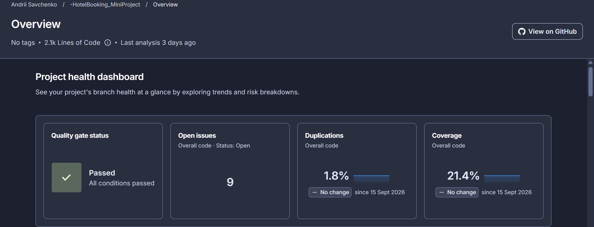

Software Quality
System under test - what BookingManager does and how it is wired
Test design - structure, naming, shared setup
Mocking - isolating the logic from the database with Moq
Data-driven test - boundary value analysis with [Theory]
Bugs the tests found - and how we fixed them
Coverage of the business logic
SonarCloud and the Project health dashboard
Conclusions
IRepository<Booking>IRepository<Room>Repositories are injected through the constructor, so tests can replace them with fakes.
| Method | Rule to test |
|---|---|
FindAvailableRoom | Start date must be in the future and not after the end date. Returns the first room without an overlapping active booking, or -1. |
CreateBooking | If a room is free: assign it, mark the booking active, save it. Otherwise return false and save nothing. |
GetFullyOccupiedDates | Return every date in the period on which all rooms have an active booking. |
Method_Scenario_ExpectedResultSetUpBookings(...) keeps the Arrange part shortDateTime.Today, so tests never expireEquivalence classes: invalid dates, no bookings, free room, all rooms taken, inactive (cancelled) booking.
Boundary values: the day before, the same day, and the day after an existing booking.
public BookingManagerTests() { rooms = new List<Room> { /* Id 1 and 2 */ }; mockBookingRepository = new Mock<IRepository<Booking>>(); mockRoomRepository = new Mock<IRepository<Room>>(); mockRoomRepository.Setup(r => r.GetAllAsync()) .ReturnsAsync(rooms); bookingManager = new BookingManager( mockBookingRepository.Object, mockRoomRepository.Object); }
Setup(...).ReturnsAsync(...) decides which bookings and rooms the manager sees. No database, fast and deterministic.
Verify(..., Times.Once) and Times.Never prove that AddAsync is called when a room is free, and not called when the hotel is full.
// CreateBooking: room is free SetUpBookings(); var booking = new Booking { StartDate = Today.AddDays(1), EndDate = Today.AddDays(2) }; await bookingManager.CreateBooking(booking); mockBookingRepository.Verify( r => r.AddAsync(booking), Times.Once); // CreateBooking: all rooms taken mockBookingRepository.Verify( r => r.AddAsync(It.IsAny<Booking>()), Times.Never);
public static IEnumerable<object[]> OverlapBoundaryCases() { // startOffset, endOffset, expectRoom1Available yield return new object[] { 1, 9, true }; yield return new object[] { 1, 10, false }; yield return new object[] { 15, 15, false }; yield return new object[] { 20, 25, false }; yield return new object[] { 21, 25, true }; yield return new object[] { 5, 25, false }; } [Theory] [MemberData(nameof(OverlapBoundaryCases))] public async Task FindAvailableRoom_ OverlapWithExistingBooking_ReturnsExpectedAvailability( int startOffset, int endOffset, bool expectRoom1) { // existing booking: room 1, day 10 to day 20 ... }
Red = overlaps, so room 1 is skipped. Green = no overlap. The interesting cases sit exactly on the edges (day 10 and day 20), where < versus <= matters.
GetFullyOccupiedDates is tested with a [MemberData] theory whose data includes whole arrays of bookings and the expected dates.
| Case | Expected result |
|---|---|
| Both rooms booked for the whole period | every date returned |
| Both rooms booked for the middle day only | only that day |
| One booking is inactive (cancelled) | empty list |
[Theory] [MemberData(nameof(FullyOccupiedDatesCases))] public async Task GetFullyOccupiedDates_ VariousBookingConfigurations_ReturnsExpectedDates( Booking[] bookings, DateTime start, DateTime end, DateTime[] expectedDates) { // Arrange SetUpBookings(bookings); // Act List<DateTime> occupied = await bookingManager .GetFullyOccupiedDates(start, end); // Assert Assert.Equal(expectedDates, occupied); }
GetFullyOccupiedDates compared the number of bookings on a date with the number of rooms.
Example: 2 rooms, and two active bookings on room 1 for the same days. The code counts 2 bookings, 2 ≥ 2, and reports the dates as fully occupied. Room 2 is actually free.
// both bookings on room 1, room 2 is free SetUpBookings( new Booking { RoomId = 1, IsActive = true, ... }, new Booking { RoomId = 1, IsActive = true, ... }); var result = await bookingManager .GetFullyOccupiedDates(start, end); Assert.Empty(result);
The method returned every date from day 5 to day 10 instead of an empty list.
// OLD (bug) // if (noOfBookings.Count() >= noOfRooms) // FIXED: count each booked room once if (noOfBookings .Select(b => b.RoomId) .Distinct() .Count() >= noOfRooms) fullyOccupiedDates.Add(d);
After the fix all 32 tests pass.
In FindAvailableRoom a comparison used <= where it needed <.
// wrong: request ending ON the existing // start date looked like "no overlap" startDate <= b.StartDate && endDate <= b.StartDate // correct startDate < b.StartDate && endDate < b.StartDate
The case { 1, 10, false } asks for a stay that ends exactly on the day the existing booking starts. With <= the room is wrongly returned as free, so the assertion fails.
A single "typical" test would never hit this edge. This is why boundary values are worth a theory.
line and branch coverage of BookingManager
measured locally with dotnet-coverage, 32 tests, 0 failures

All conditions pass on the latest analysis.
4 reliability issues (all medium, rating C) and 5 maintainability issues (rating A). Duplication is low.
Counts MVC, Web API and Infrastructure too, which are outside the scope of the Core unit tests. On the SonarCloud Code tab, BookingManager.cs itself shows 100%, 0 uncovered lines.
Verify checks behaviour, not only return values.